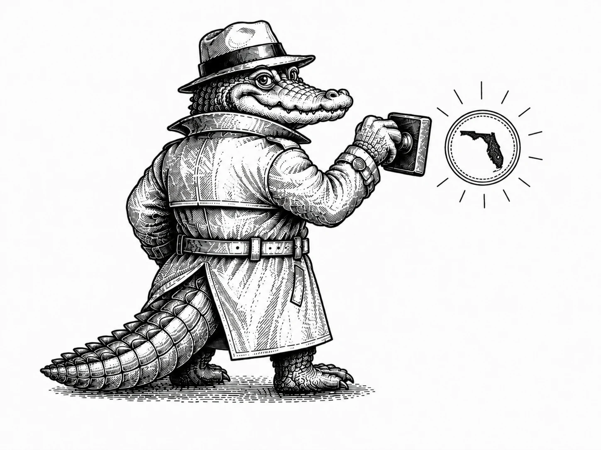

Send the assignment.
I'll handle the signing.
RON first when the transaction allows it. Mobile when physical presence or wet ink is required.
For title companies, lenders, credit unions, law firms, settlement professionals, real estate teams, and organizations coordinating notarizations for clients.

Need the package handled? Send it.
Start the assignment, answer a few quick questions, and confirm. Then go to Where → Secure Package Upload and send the complete package right away. Mario reviews it, prepares the Proof transaction, and coordinates the signer when needed.
Upload the package as soon as you book. The sooner it arrives, the sooner Mario can prepare and pre-tag the transaction before the signer joins.
Start RON AssignmentClosing issue today? 321-537-2876 · FloridaNotaire@gmail.com
Clear package pricing
Ancillary Documents / Loan Modification
For a limited professional assignment that is not a full closing package.
Seller / Cash / HELOC
Managed RON assignment for eligible seller-side, cash, or home-equity closing packages.
Purchase / Refinance Package
Full professional RON workflow for eligible home purchase or refinance packages.
Error Correction / Trailing Documents
Designed for small corrective assignments, generally one to three affected documents when RON is appropriate.
These are professional assignment or transaction package rates. Florida statutory limits continue to apply to the notarial-act component. Larger or unusual assignments are confirmed before the signing.
Fast electronic payment, with room for established business workflows
Payment for Mario's service is handled separately from Proof. Unless another arrangement has been approved, Mario may send a Stripe payment link by text or email before or during the assignment.
Established business clients may use an approved invoicing, electronic or paper check, or other organizational remittance process when agreed in advance.
Send it. Confirm it. Upload it. I’ll take it from there.
- Start the assignment. Choose the closest available time and answer the short booking questions.
- Confirm and upload. On the confirmation page, use Secure Package Upload.
- Prepare. Mario reviews the package and prepares the Proof transaction.
- Coordinate. Mario contacts the signer when needed and handles the live signing.
- Complete. The finished transaction returns through the configured workflow.
You send the package. I work from the assignment you approved.
Your team keeps control of the document set. Send or identify the package you want executed, and I use that assignment to prepare and complete the notarial workflow.
That means fewer handoffs, less back-and-forth, and no time lost guessing which form belongs in the transaction.
Secure online notarization through Proof
Remote transactions are conducted through Proof's online notarization platform. Proof uses encrypted data transmission and storage, layered identity-verification tools, electronic signing, and tamper-evident completed documents.
- Credential analysis and identity-verification workflow
- Live audio-video session
- Electronic journal and recording
- Digitally signed, tamper-evident completed documents
Repeat documents can become repeatable workflows
If your organization repeatedly uses the same document format, a familiar assignment can require less setup the next time it comes through.
When appropriate, Mario may be able to reuse an approved prior transaction setup or prepare a repeat workflow after your organization supplies or confirms the applicable document.
RON when it works. Mobile when it is needed.
Remote Online Notarization
Preferred for eligible professional assignments when transaction requirements permit RON.
- No notary travel
- Remote signer convenience
- Electronic transaction workflow
- 24/7 availability subject to availability
Traditional Physical Signing
Available when wet ink, physical presence, or the transaction requires it.
- $45 flat mobile / travel charge in Palm Bay or Melbourne
- Applicable assignment or notarial fees remain separate
- Outside Palm Bay / Melbourne: additional travel quoted first
- Printing, scan-back, or shipping may apply when requested
Professional credentials you can verify
Mario's current NNA signing-agent credentials and background-screening status can be independently verified through the public SigningAgent.com profile. The underlying background report is not published here.
Current E&O policy term: July 2026 through July 2027. Certification and background-screening status should be verified through the linked NNA profile for the most current status.
What Mario handles, and what stays with your team
Mario provides notarial and related signing services. He is not acting as the attorney, title agent, settlement agent, lender, or document preparer.
- Coordinate the signing appointment
- Prepare transaction fields where appropriate
- Perform authorized Florida notarial acts
- Administer authorized oaths and affirmations
- Complete the notarial certificate
- Handle local mobile assignments when needed
- Choose the legal document for the signer
- Give legal advice
- Determine how a legal defect should be corrected
- Draft closing or legal documents
- Conduct a deposition or provide court reporting
- Guarantee that a receiving party will accept RON
Professional Assignment FAQ
Can I send the same document format to Mario repeatedly?
Yes. If your organization repeatedly supplies the same document format, a prior transaction setup may be reusable where appropriate.
Can Mario fix a closing error after the signer leaves?
Potentially. If your team supplies the corrected document or instructions and the transaction is eligible for RON, Mario may be able to perform the required notarial act remotely.
Are you available after normal business hours?
Remote assignments are available 24 hours a day, 7 days a week, subject to availability. For an urgent closing or correction, call or text Mario directly.
Ready when your closing is.
Start the assignment, answer a few quick questions, then confirm. Your confirmation page will show Where → Secure Package Upload. Upload the package right away and Mario will take it from there.
Start RON AssignmentCall or text 321-537-2876 · FloridaNotaire@gmail.com
Need a personal notarization instead? View Everyday Notary Services.
Government or public-sector request? View Government & Public-Sector Services.